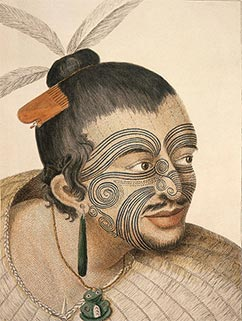

Un tatouage est un dessin décoratif et/ou symbolique permanent effectué sur la peau. Auparavant, il était le plus souvent effectué avec de l'encre de Chine ou des encres à base de charbon ou de suif.
De nos jours il s'agit plus d'encres contenant des pigments industriels. Il existe différentes couleurs d'encre et même une encre transparente qui ne réagit qu'à la lumière noire : ce type de tatouage est appelé tatouage « UV » ou « Blacklight ». Le tatouage est considéré comme un type de modification corporelle permanente.
Étymologie
Le mot vient du tahitien tatau, qui signifie marquer, dessiner ou frapper et dérive de l'expression « Ta-atouas ». La racine du mot, ta signifie « dessin » et atua signifie « esprit, dieu ». Le docteur Berchon, traducteur du deuxième voyage de Cook vers Tahiti en 1772, employa pour la première fois le mot tattoo ; le mot sera francisé en « tatouage» à la fin des années 1700. Il est d'abord introduit dans le Dictionnaire de l'Académie française en 1798, puis dans la première édition du dictionnaire de Littré en 1863. Dans sa prononciation, ce mot est commun à la plupart des langues polynésiennes (le tahitien, le samoan, le tongien, le maori de Nouvelle-Zélande et l'hawaïen).
Tribal
découvrirCeltique
découvrirHISTOIRE
Le tatouage est une pratique attestée en Eurasie depuis le
Néolithique. « Ötzi », l'homme des glaces découvert gelé dans
les Alpes italo-autrichiennes arbore des tatouages supposés
thérapeutiques (petits traits parallèles le long des lombaires
et sur les jambes). Les analyses au carbone 14 réalisées par la
communauté scientifique estiment sa mort vers 3500 av. J.-C.
Deux momies égyptiennes du British Museum datées de 3000 av.
J.-C. ont des tatouages figurant notamment un mouflon à
manchettes et un taureau sauvage. En Égypte, trois momies
féminines tatouées sur les bras, les jambes et le torse, datant
de l'an 2000 av. J.-C., ont été découvertes dans la vallée de
Deir el-Bahari (près de Thèbes).
Leur description évoque de
nombreux tatouages représentant des lignes parallèles et des
points alignés. Tout comme en Égypte, plusieurs momies tatouées
ont été découvertes dans la région de l'ancienne Nubie. En 1910,
une première momie, datant de l'an 1500 av. J.-C., est
découverte par le Britannique Cecil M. Firth sur le site
archéologique de Kubban (environ 100 km au sud d'Assouan). Elle
présente des éléments de tatouage sur la région abdominale en
forme de losanges pointillés entourés d'une double rangée de
tirets.
Puis en 1961, de nombreuses momies tatouées sont
découvertes par André Vila sur le site de fouilles françaises au
village d'Aksha dans le nord du Soudan. Toutes les momies dont
le sexe a pu être identifié sont des femmes, à l'exception d'un
homme tatoué sur le visage. Le style des tatouages est le même
qu'en Égypte et sur le site de Kubban, et représente aussi des
motifs géométriques, des points et des lignes. André Vila estime
que ces momies datent du ier siècle avant notre ère, voire du
tout début de l'ère